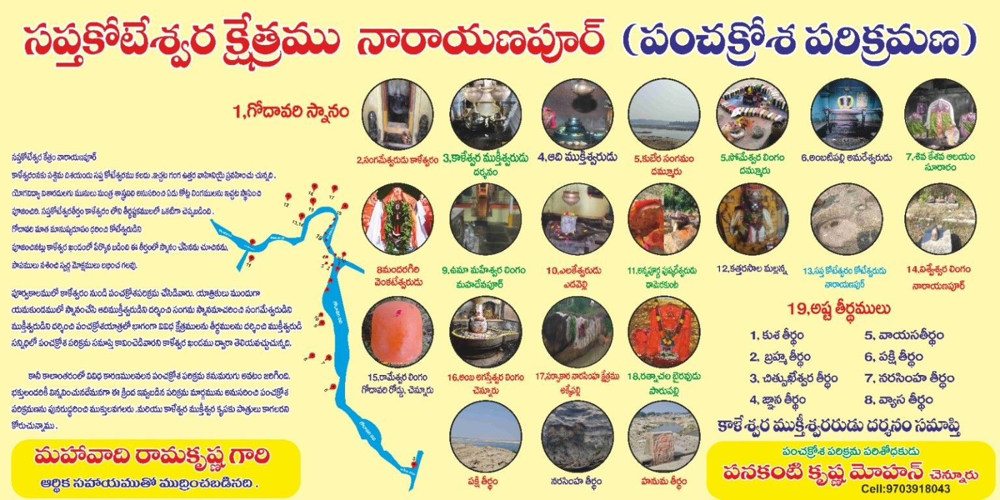

🕉️ పంచక్రోశ పరిక్రమణ

తెలుగు
పంచక్రోశ పరిక్రమణ కాళేశ్వరం పవిత్ర ప్రాంతానికి సంబంధించిన ఆధ్యాత్మిక యాత్రా సంప్రదాయంలో ముఖ్యమైన భాగంగా వివరించబడుతుంది. గోదావరి–ప్రాణహిత సంగమ ప్రాంతమైన కాళేశ్వరం శ్రీ కాళేశ్వర ముక్తేశ్వర స్వామి ఆలయంతో పాటు అనేక క్షేత్రాలు, తీర్థాలు మరియు పవిత్ర ప్రదేశాలకు ప్రసిద్ధి చెందింది. పరిక్రమణలో గోదావరి స్నానం, సంగమ దర్శనం, వివిధ శైవ మరియు వైష్ణవ క్షేత్రాల సందర్శన, పవిత్ర తీర్థాల దర్శనం వంటి అంశాలు ఉన్నాయి.
క్రింద ఇవ్వబడిన జాబితా మీరు అందించిన చిత్రంలో చదివిన పంచక్రోశ పరిక్రమణ సమాచారాన్ని ఆధారంగా రూపొందించబడింది. ప్రయాణానికి ముందు స్థానిక ఆలయ నిర్వాహకులు లేదా సంబంధిత అధికారుల వద్ద మార్గం, దర్శన సమయాలు మరియు ప్రస్తుత పరిస్థితులను నిర్ధారించుకోవడం మంచిది.
🛕 పంచక్రోశ పరిక్రమణలోని క్షేత్రాలు
- గోదావరి స్నానం
- సంగమేశ్వరుడు – ఇళేశ్వరం
- శ్రీ కాళేశ్వర ముక్తేశ్వర స్వామి దర్శనం
- ఆది ముక్తేశ్వరుడు
- కుబేర సంగమం
- అంబటిపల్లి అమరేశ్వరుడు
- శివ–కేశవ ఆలయం – సూరారం
- రామదేవగిరి వెంకటేశ్వరుడు
- ఉమా మహేశ్వర లింగం – మహాదేవపూర్
- ఎలకేశ్వరుడు – ఎడపల్లి
- చిత్రంలో పేరు స్పష్టంగా నిర్ధారించలేని క్షేత్రం
- కత్తరసాల మల్లన్న
- సప్తకోటేశ్వరం – కోటేశ్వరుడు, నారాయణపూర్
- విశ్వేశ్వర లింగం – నారాయణపూర్
- రామేశ్వర లింగం – గోదావరి రేవు, చెన్నూరు
- అంబ అగస్తేశ్వర లింగం – చెన్నూరు
- సర్వాకార నారసింహ క్షేత్రం
- రత్నాచల భైరవుడు – పారుపల్లి
💧 అష్ట తీర్థాలు – Eight Sacred Theerthalu
🛕 పరిక్రమణ క్రమం
మీరు అందించిన వివరాల ప్రకారం, పాత పంచక్రోశ పరిక్రమణలో యమకుండంలో స్నానం → ఆది ముక్తేశ్వర దర్శనం → సంగమ స్నానం → సంగమేశ్వర దర్శనం → ముక్తేశ్వర దర్శనం → మార్గంలోని వివిధ క్షేత్రాలు మరియు తీర్థాల దర్శనం → కాళేశ్వర ముక్తేశ్వర స్వామి సన్నిధిలో పరిక్రమణ పూర్తి చేసే విధానం వివరించబడింది.
🌿 Pilgrimage & Tourism Information
This page can be expanded with individual temple history, photographs, Google Maps links, distances from Kaleshwaram, temple timings, nearby accommodation, food facilities and route information.
English
Panchakrosa Godavari Parikrama – Kaleshwaram presents information about the sacred pilgrimage region around Kaleshwaram, including temples, kshetralu and eight sacred theerthalu. The circuit described here includes Godavari Snanam, Sangameshwara, Sri Kaleshwara Muktheeshwara Swamy, Adi Muktheeshwara, Kubera Sangamam, Ambatpally Amareshwara, Suraram Shiva-Keshava Temple, Ramadevigiri Venkateshwara, Mahadevpur Uma Maheshwara, Elakeshwara, Kattarasala Mallanna, Saptakoteshwara and other sacred destinations listed above.
The page is designed as a pilgrimage and tourism information resource. Route details, distances, maps, photographs, temple timings and local facilities can be added for each destination.